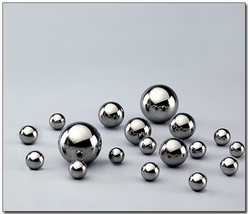

無題 @ Sep 14, 2007
要是有希望，
常常還是像飛娥撲火般地，
直到燒得焦黑。
那張臉終于不可收拾，
它很寂寞，很關閉，很無聊，很潦草，
就像那一段你的心情和你的生活。
你也一定慢慢回想起了那些艱難的日子。
你從一個單純的孩子開始，漸漸看到生活里的
霸道、阿諛、出賣、猥瑣、報復、貪婪，
你漸漸看到了生活里的臟。
生活造就了一切，而不是他。
他也是一個人，一個也許寂寞著的人。
他不是一個可以給你一切的上帝。
－－《起舞》

要是有希望，
常常還是像飛娥撲火般地，
直到燒得焦黑。
那張臉終于不可收拾，
它很寂寞，很關閉，很無聊，很潦草，
就像那一段你的心情和你的生活。
你也一定慢慢回想起了那些艱難的日子。
你從一個單純的孩子開始，漸漸看到生活里的
霸道、阿諛、出賣、猥瑣、報復、貪婪，
你漸漸看到了生活里的臟。
生活造就了一切，而不是他。
他也是一個人，一個也許寂寞著的人。
他不是一個可以給你一切的上帝。
－－《起舞》
《两只狗》是穿西装的二人转？没耽搁，打了上海的订票电话，打算预定10-2孟京辉话剧《两只狗对生活的意见》，被告知9-30至10-7的票全部订完了。
上海爱艺术的人真多，这次看不成年底去北京看。

剧情介绍：
两只狗对生活的意见很多，他们
对贫穷有意见，
对暴发有意见，
对网恋有意见，
对偷情有意见，
对饥饿有意见，
对减肥有意见，
对OFFICE LADY有意见，
对女秘书和男老板有意见，
对二环路堵车有意见，
对苏丹红有意见，
对非典有意见，
对转基因蔬菜有意见，
对高价幼儿园有意见，
对招工强调高学历有意见，
对养老保险有意见，
对当啷入狱有意见，
对春节买不到回乡火车票有意见，
对假LV有意见，
对英雄流血又流泪有意见……
他们经历了生活的种种，他们像摇滚游吟诗人一样高唱他们对生活的意见，终于，他们告别地球，出走太空。
中国国家话剧院出品的，由著名实验戏剧导演孟京辉执导、著名实力派青年演员陈明昊、刘晓晔主演的话剧《两只狗的生活意见》将在2007年8月30日至9月14日在上海话剧中心D6空间小剧场演出。
作为2007年度北京最火爆的小剧场话剧，《两只狗的生活意见》2007年5月至6月在北京连续上演35场，门票提前15天售完，被称为年度最佳小剧场戏剧作品，也被戏剧界评为近十年来最具实验探索精神，最具国际戏剧表演水准，最能体现中国当代艺术审美品格，最有票房号召力的戏剧精品。
话剧《两只狗的生活意见》由中国优秀青年戏剧演员陈明昊和刘晓晔主演，他们被誉为“孟氏戏剧金牌爆笑组合”。“两只狗”融入了意大利即兴喜剧，法国喜剧和中国传统喜剧的表演手法，创造性地将热情洋溢的即兴表演风格和扎实的现实主义表演熔为一炉，这两个演员每人扮演角色均超过30个。剧场效果轰动热烈，在2个小时的演出过程中，观众笑声多达630次，掌声多达140次。
该剧讲述了两只狗离开家乡进入城市的生活经历。他们试图在城市里寻找到幸福的生活，寻找到伟大的理想，然而城里的世界并不象他们想象得那么美好……四处碰壁之后，他们对生活产生了各种意见，这些意见是他们简单纯洁的头脑无法理解的生存难题。为了能够吃上一口饱饭，来福和旺财在街头卖艺，参加明星选秀进入娱乐界，去当保安，被富人收养又被抛弃，被打狗队打得遍体鳞伤，最后，他们决定勇敢地面对生活，不管生活有多艰辛，一定要勇敢地走下去！由“精彩的导演、精彩的演员和精彩的意见”构成的小剧场话剧《两只狗的生活意见》无疑是近十年来当代中国小剧场话剧的颠峰之作。
一早心情很好的坐在办公桌前，接一手机，海关打来的，上周要我补充材料，在本周三前送去。人家一早来电话说：“你还当真周三才送呀？”......那口气......我靠，海关没给你派事做呀，就这么惦记着我那材料？周三的早晨不是才开始吗？你当我们天天跟你们海关的人一样没事干挖空心思捞好处么？说话跟吃了枪子儿似的，在海关遇到各种烂人太TM多了。我们公司在码头被海关查验索要现金的事屡见不鲜。
有回在旅检一副科长那脸拉的跟驴脸一样长，等他盖章，人家坐着发呆楞说没空，还凶巴巴的说你催我工作啊？我靠，我哪敢催海关人工作呀，我在等你工作，你牛。我就这么对他说了。盖章前那副科的脸跟黑社会似的，恐吓我么？我就怕你不恐吓！看谁心理素质好？我最喜欢这种锻炼了。一科长劝我不要投诉他了，说他是新来的，一人被投诉会影响到全科人的利益，我真算了。后来又遇见过那烂人，那笑跟树上烂了的果子一般。
还有一次核销手册，一科长打电话来劈头盖脸地训了我一顿，谁允许你用复印件核销的？我说你们当时办事人员啊，科长说：“他有什么资格同意你用复印件？”我火大了，他代表海关办公，他没资格谁有资格？你一个人说了算？那边气急败坏的说：“你们领导呢？叫你们领导来。”一般话说到这地步就特没劲了，“领导多呢，你要叫哪一个啊？”“叫你们办公室主任来。”“我告诉你电话，你自己打给他吧。”没过一会主任打电话来：“我们最近打点的少了，正好是元旦......”就这么些人把海关的形象都搞得跟贪婪的豺狼似的。这德性，代表政府服务大众，简直是糟蹋！有时看新闻里宣传海关如何如何，让人嗤之以鼻，两眼冒火，现实根本不是那么回事！
常有人说我小资，其实搭不上边。恰恰有时特愤青，尤其在每月生理周期之前，我就是一标准的愤青。
电话约了女友晚上一起逛街。
女友还在病毒性感冒中。
地点在德基广场。
作好心理准备对于下班高峰交通的恶劣，一路上几乎都是禁左标志，绕了两圈才到达女友家门前......一个小时过去了。
逛街时遇见一个穿黑色吊带连衣裙的女人，2/3的胸部裸露在外面，从我们身边走过时，女友轻声说了一句：“奶牛。”这个女人不象刚刚下班的样子，逛店心不在焉，气质一般，衣着也并不精致。这样一个女人露着大半个白白的胸脯“骄傲”的走在商场里#·%#……%
讲到裸露，昨儿早晨电台里播报，MSN封了某先生的共享空间，只因其将自己孩子的照片共享在MSN SPACE里。到了公司Cherry跑来问我：“你还知道我的空间为什么登陆不了了吗？被MSN封了......”我问：“为什么？”“因为我共享了小孩裸露的照片，人家要保护儿童合法权益。”
哦，这世界的观念是这样的，成年女性可以裸露2/3乳房行走于公共场所，婴儿露屁股照片是万万不能在网络共享与亲朋的。那给婴儿穿上三点，行么？
在德基买了双ecco的鞋，特柔软。我常常喜欢朴素有品质的东西，搭配协调会是另一种时尚。
查了国外的网站，售价比国内便宜1/3还不止，NND~~价格给关税、增值税占了将近一半，特畸形，汽车也是。一辆MINI国外售16万CNY左右，到了国内最便宜的也要30万出头，凭什么？有钱也不往那玩具上砸。早晨看一QQ在高架上开得那个快，里面坐一很酷的年轻人，估计在国外看MINI就跟看到这情形同样的心情。
很久没逛街，大有“我不在江湖....”的感觉，什么地儿什么东西好吃，什么店卖什么好玩的，完全生疏了。

早晨腥来浑身跟灌了铅似的沉重疲惫，又一个工作周开始了。心里却轻松着，以前干吗活得沉重，压根没必要，为着别人而活，不值。再说了，时间能解决所有问题~~

最近想学室内设计。小时侯喜欢画画，可惜我父母没把我往那上面培养，我属于父母非计划外产品，如果我出生是个男的，我父母准备把我送给我姨娘，女滴，他们就留着养。我这产品完全没有什么系统的规划的发展计划，他们会以爱的名义强迫我违背己愿，我会有情绪上的反抗，但年龄大了，才越来越明白干吗要有情绪，哄着他们开心比期待共鸣重要。回到原题上，前年在南艺上过平面设计的一些课程，老师讲课速度那个快，难道学生们都是天才？上素描课最搞笑，上来就让我们临摹，不停的画，这样我完全可以自己在家里画啊，干吗交钱和别人挤在一起画呢？学设计的想法时不时就会从心里涌出来，必须静下心去做这件事，有人说干这个挺苦的，有人说你都多大年龄了？也有人说你能学到什么程度？现在我无法解释，理由只有一条：喜欢。将来能实现个人价值，当然是更好的结局，做喜欢的事，总比混沌度日好些吧？不能，就当兴趣爱好。
当梦想照进现实，选择在现实义无返顾的去实现梦想，还有其他选择吗？
你要认真、特认真，你肯定会内分泌失调；
你要有责任感、特有责任感，你肯定也会内分泌失调。
这是我对这份工作的总结。
一女友说：“内分泌失调经常从你嘴里骂出来，感觉特时髦...”
晕倒。
真心，对于真正的生活来说，常是脆弱不堪的。就像豌豆上那个叫痛的公主一样脆弱。然而，那个年龄的女孩子真的不那么可爱，敬而远之是最好的办法。总有一天她们会了解事物在生活中的真相，比如父母也有情欲。生活有时并不如想象中那么美好和公平，偶像也是凡人，希望会破灭，同情、隐忍、宽容等等，会从青涩走向成熟。
对于个人来说，那个年龄阶段，常常也会成为你一生中的镜子，当回忆起那时对他人的不良行为而羞愧的心情，今后总会变得随和宽容的你也会惊醒，检查自己身上的尘土，在同流合污的路上收住脚步。--《起舞》
因为怕自己受伤，所以，我时常也会做出斤斤计较的事来。
但是近两年，我好象渐渐醒来，心灵变得坚实而柔韧。
就好象一个向我索要糖果的孩子，因为我没能给他而对我飞起一脚，我不会和孩子计较，因为我也是从那个年龄走过来的女子，也曾痛恨别人身上不完美的东西，那时我尚不知妥协的痛恨之情。
歌手：sean kingston
专辑：《eyes above water》
《Beautiful Girls》.MP3
You're way too beautiful girl
That's why it'll never work
You'll have me suicidal, suicidal
When you say it's over
Damn all these beautiful girls
They only wanna do your dirt
They'll have you suicidal, suicidal
When they say it's over
...... ......
***“忙”，“非常忙”，已经成为一些人生活的常态。人们见面问：“最近忙吗？”你要回答“不忙”，就有下岗待岗或无理想无能力亦无成就之嫌疑。越忙越是成功者，成了我们这个时代的新刻板印象。
《放慢生活的脚步》中写到：“匆忙的生活不可避免的会导致肤浅。”
好在这个世界上还有明白人，在这个世界上从容地生活是一种境界。从容不是懒惰，不是无聊，是明白自己到底想要什么后的神闲气定。
***我评价一个人的外貌，不太注重五官是否符合审美，而是看整体的感觉。我比较相信一个人的容貌跟他/她的心态是有内在联系的。当然，不是说心态越好的人长得就越漂亮。但是内心慈悲的人，脸上常会显现出快乐、从容的神情。久而久之，面相就越来越和谐、优美，看上去很舒服，亲切。
***失意还是诗意，完全取决于你怎么看？
***跟别人总爱唱反调，在某些人身上是因为缺乏自我肯定，在另一些人身上可能是因为个性太强。因此，那些野心很大的人，那些嫉妒心理很强的人，那些无法忍受别人比自己强，别人比自己好，别人比自己有魅力的人，都可能倾向于与他人“针锋相对”，因为唯一能显示自己重要，使自己有力量去面对对手的手段，就是否决和反对别人。有些人往往意识不到，这种辩驳的游戏是为了让自己变得重要的伎俩。

Angie寄给我的首饰架，恰好我有一个穿白纱裙的首饰架，比这款大：）放在一起很配对~

生日买的项链，粗粗的链子，末端一颗珍珠，和前年买的的耳环很配对~
音乐的节律与我们身体的节律趋向一致时，
更容易产生感情上的共鸣。

早晨的广播里说道：“不要总是算计别人，做人要厚道。总是算计别人，迟早是要还的。”
很久没有听广播，快一个月了吧？
听广播跟生理发育及审美发展差不多，在不断变化和成熟，去年我经常听雷雷娜娜早间节目，无厘头搞笑，笑完之后除了轻松心里什么也没能留下。想不起来什么时候开始喜欢听新闻，除了广播新闻还喜欢看电视新闻。回想过去听广播就是听里面的音乐流行歌曲，现在完全变化了。
差不多也是一个月了吧，搜索不到93.7和96.6广播频道，这两个是我比较喜欢听的新闻频道，在上班和回家的路上，这边新闻结束了更换另一个继续听，有时晚上回家晚了，路上听96.6频率10：30的《新周刊》，虽然那些稿件未必全部出自主持人之手，可她收集整理并读给那些或繁忙或孤单的听众，会有点收获。广播解决了快节奏生活下的各种问题。我们可以不阅读去听小说连载，可以不看报去听新闻，不了解文娱动态，广播提供了各种信息......现在，我觉得自己的耳朵少了某些声音，确有不适，是车上的收音机坏了么？